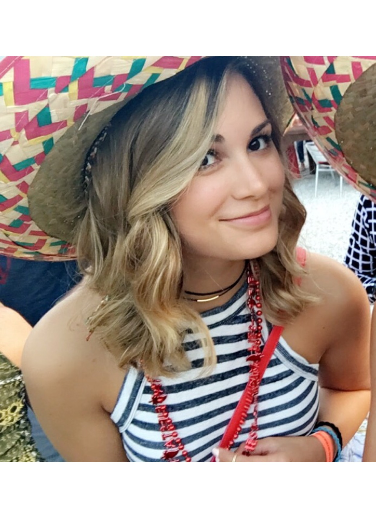

About Me
My life has lead me all over the world, I have liv ed all over the United States as well as Costa Rica, China, Peru, and Mexico. I have been a traveler for the majority of my life and it will always be one of my greatest pleasures. Travleing and living abroad has also given me the ability to easily, quickly and seamlessly adapt to my surroundings. I enjoy being able to immerse myself into another culture and get a wider understanding of the world around me.
I have been in the hospitality industry since the age of 16 and it has given me a true passion for helping people, a desire that was truly realized when I met a little boy named Brady. During my time with volunteering with the Sunrise Program, I was able to work one on one with a truly remarkable little boy. Brady’s parents found out that he was Autistic at the age of two and at five years old, he had a vocabulary of approximately 10-15 words, working with his speech, motor skills, developmental skills and social skills, in the matter of a year I fell in love and watched this little boy blossom.
I have been in the hospitality industry since the age of 16 and it has given me a true passion for helping people, a desire that was truly realized when I met a little boy named Brady. During my time with volunteering with the Sunrise Program, I was able to work one on one with a truly remarkable little boy. Brady’s parents found out that he was Autistic at the age of two and at five years old, he had a vocabulary of approximately 10-15 words, working with his speech, motor skills, developmental skills and social skills, in the matter of a year I fell in love and watched this little boy blossom.
Connect with Me